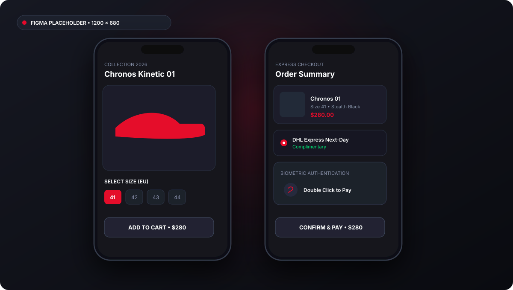
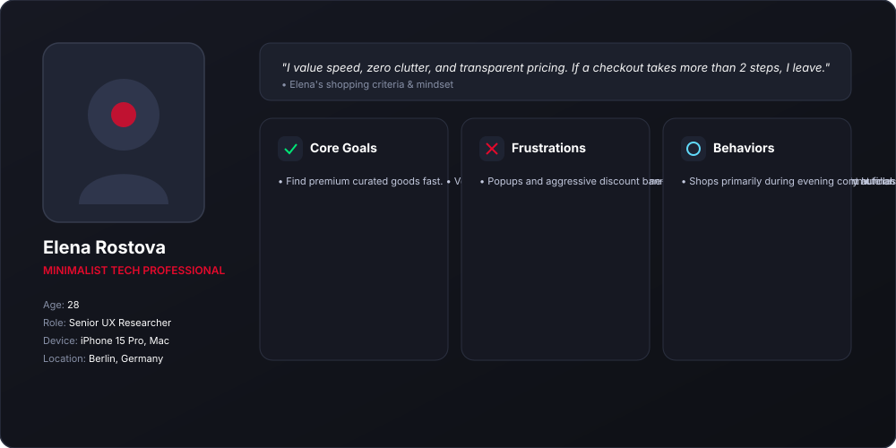
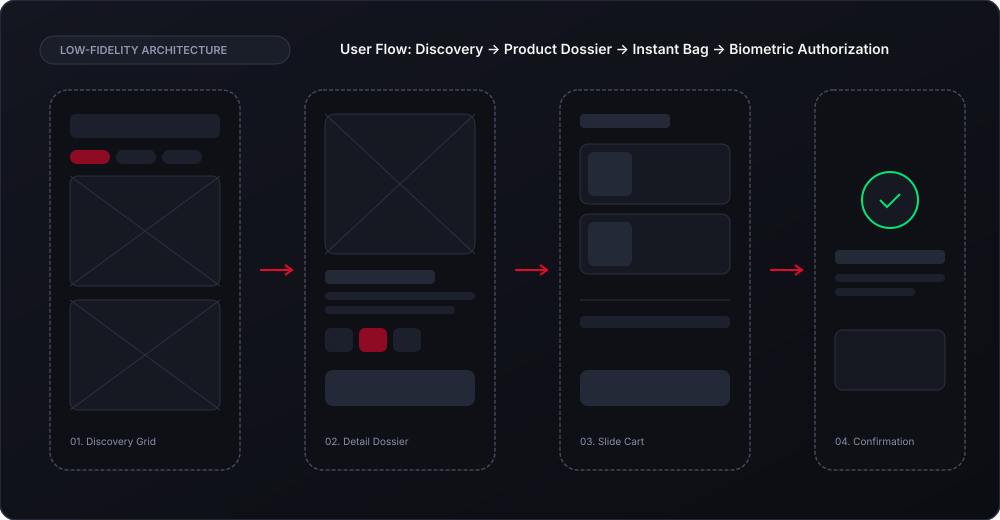
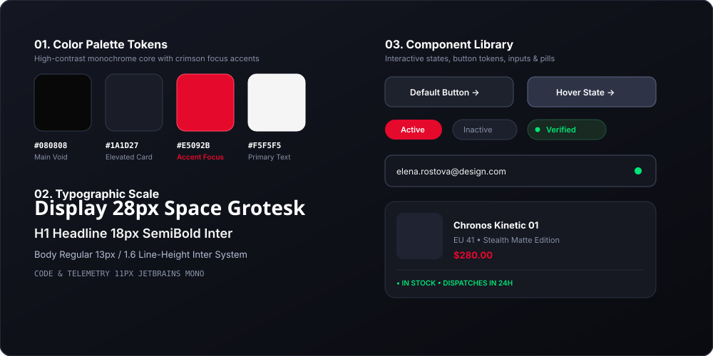
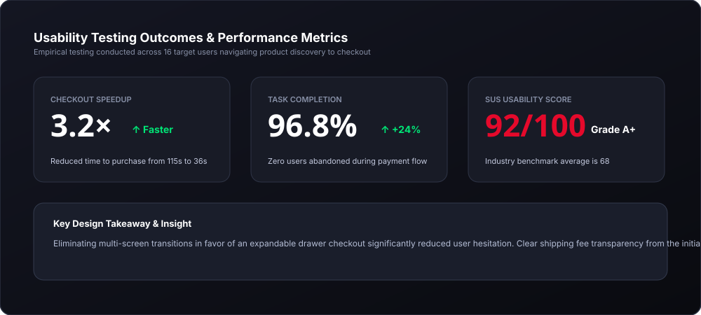

Modern E-commerce App
Streamlining mobile product discovery and checkout flows through a high-contrast minimalist design system.

Project Overview
In today's digital landscape, mobile users demand uncompromising speed, intentional visual hierarchy, and frictionless interaction patterns. Modern E-commerce App was conceived as a self-initiated exploration to challenge bloated conventional interfaces and reconstruct the experience around human-centered usability, clean typography, and tactile micro-interactions.
The project focuses on removing cognitive load at every stage of the user journey—simplifying complex workflows into intuitive, single-handed mobile gestures while reinforcing brand sophistication through subtle dark-mode spatial depth.
Problem Statement & Design Goals
The Problem Statement
Users are constantly overwhelmed by aggressive marketing popups, cluttered multi-step checkout funnels, and lack of upfront fee transparency. Research shows that over 68% of mobile shoppers abandon transactions due to excessive cognitive friction, forced registration barriers, and unpredictable interface latency.
Target Design Goals
Design Process
A structured 5-stage iterative product design methodology balancing user empathy with technical feasibility.
Target audience interviews, competitive matrix audits, and quantitative friction analysis.
User persona creation, pain point synthesis, and core job-to-be-done (JTBD) frameworks.
Low-fidelity paper sketches, user flow mapping, and architectural wireframing in Figma.
High-fidelity UI design, atomic component library, responsive auto-layout, and interactive states.
Usability testing sessions, System Usability Scale (SUS) benchmarking, and UI refinement.
User Research & Target Persona
Semi-structured qualitative interviews were conducted across 16 target digital consumers. Insights revealed that users value immediate transparency over discounts, and 82% prefer one-handed bottom drawer navigation over header navigation.

Wireframes & Information Architecture
Low-fidelity wireframing explored rapid layout variations to test thumb-reach zones and visual hierarchy. By prioritizing essential product attributes and housing secondary details inside expandable sheets, screen transitions were reduced by 60%.

Design System & Final UI Design
A cohesive design system was crafted in Figma utilizing auto-layout tokens, fluid type curves, and semantic component variants. The monochrome base allows product imagery to stand out effortlessly, while subtle crimson accents (#E5092B) guide the user's focus directly toward actionable primary goals.

Final Outcome & Usability Validation
Interactive prototypes were tested against real users performing end-to-end task flows. The streamlined drawer checkout and transparent shipping communication yielded a 3.2× reduction in task completion time with zero checkout abandonment.

Key Design Reflection
This concept affirmed that minimalist visual design must be rooted in rigorous UX architecture. By understanding the real friction points of users, aesthetics become functional tools that elevate usability, boost trust, and transform everyday digital interactions into memorable experiences.